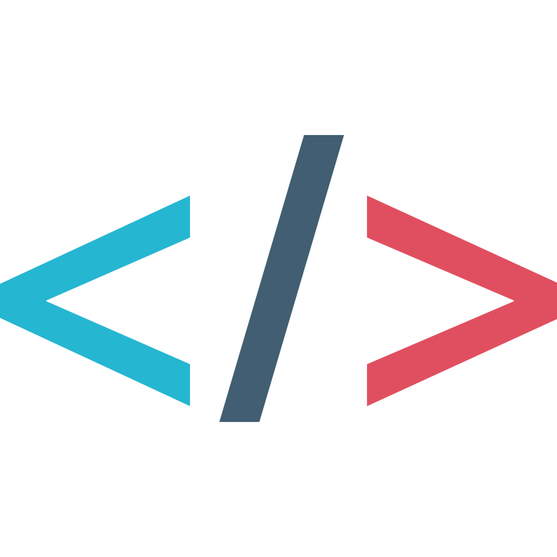

JAVA
I have over 4 years of software development experience with the Java programming language,
creating a variety of different coding projects that include the backend of a data manipulation software to
rewrite arrival and departure times of NJ Transit trains, various course guided projects utilizing
essential data structures/algorithms, and many more.

PYTHON
Within the past 3 years, I have developed a strong background in this programming language through my
classwork, research efforts, and personal projects. More specifically, some of my Python projects include a two-player
Chess boardgame with the option to pick different levels of difficulty against AI opponents, a similar Checkers game experience
with the same AI capabilities, various data visualization side-projects, and many more.

C
After just 1 year of code development experience with C, both in and out of the classroom, I have already created a machine-learning program
that implements a "one-shot learning" algorithm, a simulator for essential logic circuits, and a matrix
multiplication calculator that takes in custom inputs.

JAVASCRIPT, CSS, HTML
I hold significant experience using front-end languages and frameworks through a combination of personal and professional projects to create useful
web applications.

DATA ANALYSIS
I gained professional exposure to data analysis from a 9-month Master Data Administration internship at Brenntag and as a Research Assistant
for the Aresty Center for Undergraduate Research using two image processing AI tools, YOLOv8 model and Detectron2, to best analyse students' common
mathematical error types.

GIT
Over the past few years, I have become proficient in using Git for version control of various software development projects. My experience involves
managing code repositories, collaborating on team-based projects, and maintaining a clean commit history. I have also used Git for tasks such as
branching, merging, and resolving conflicts on both indiviual and group levels for smooth workflow and efficient collaboration.